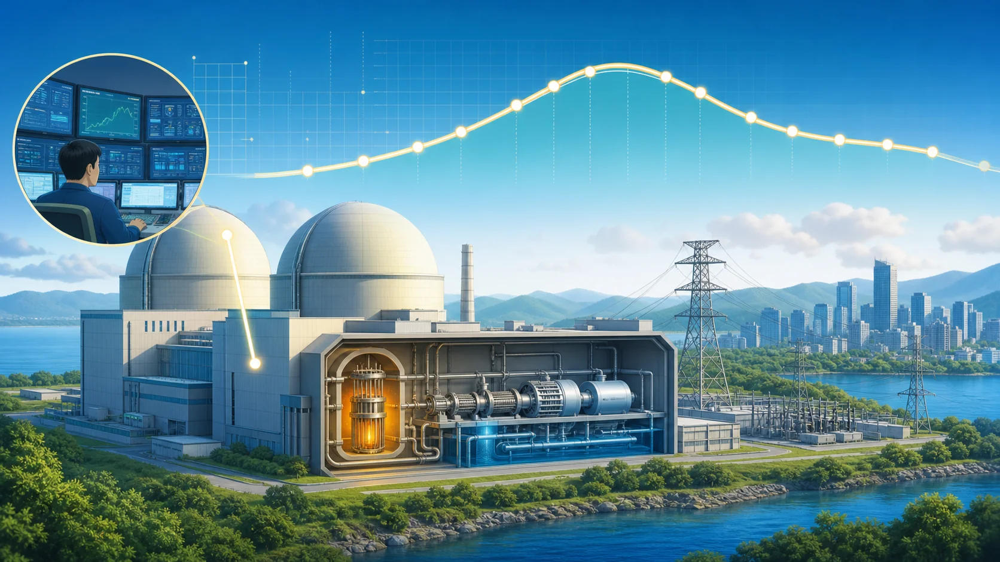
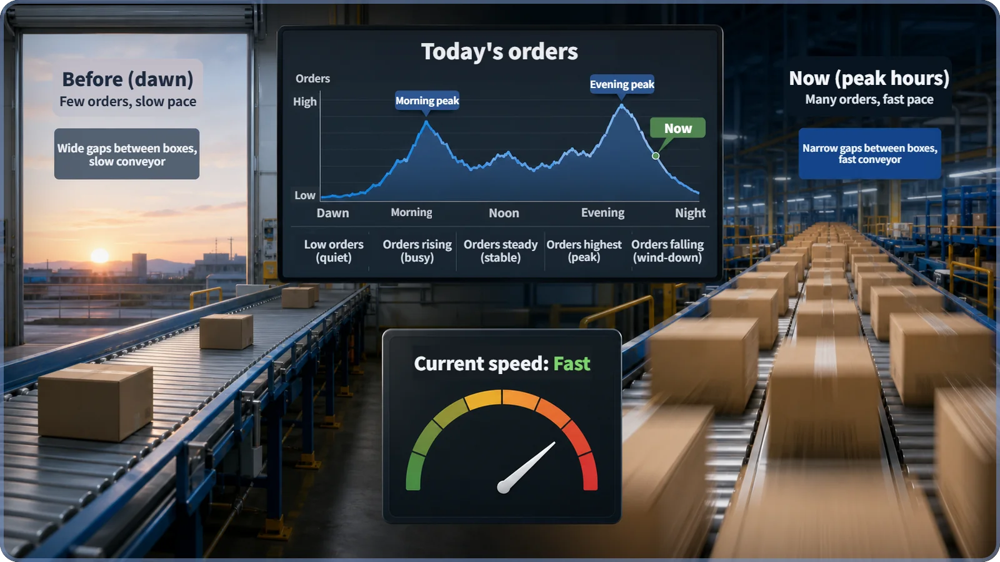
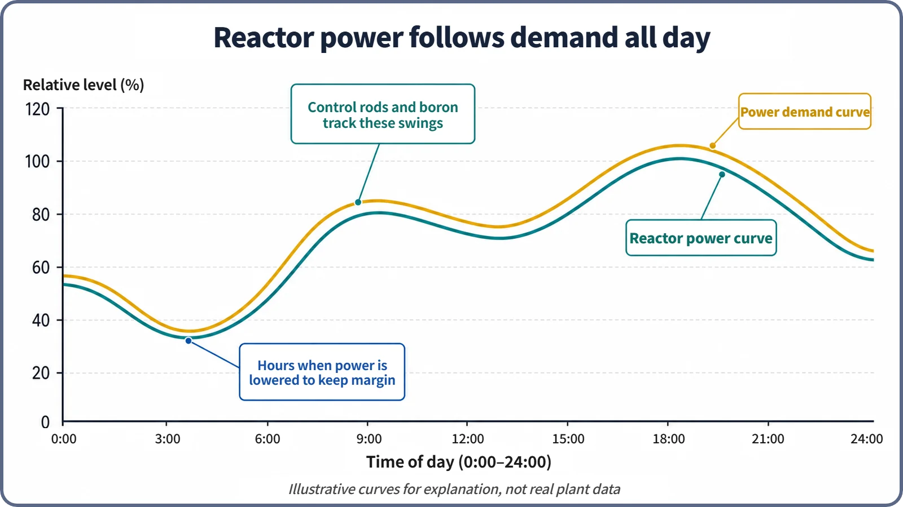

Reactor Kinetics & Reactivity · 124
When Orders Pour In, the Conveyor Speeds Up — Load-Following Operation and Reactivity Control
Control rods for the fast swings, boron for the slow ones, temperature feedback answering on its own: how a reactor's power is moved up and down with demand, and why it is never done abruptly.

Load-following operation raises and lowers reactor power on a plan to match daily electricity demand. At every steady power level the reactivity added by control rods and boron and the reactivity created by temperature feedback cancel out: ρrods + ρboron + ρfeedback = 0. Rods handle the fast swings, boron the slow ones, and thermal stress, xenon and axial power distribution limit how fast power may change.
A conveyor that follows the orders
Picture a fulfillment center's conveyor belt. Before dawn, orders trickle in, boxes sit far apart and the belt moves lazily. When the morning rush floods in, the manager speeds it up and boxes stream past tightly packed. It slows at lunch and speeds up again in the evening. The line never runs at one speed; it follows the orders, hour by hour.
A nuclear plant can do something similar. Control rods, boron concentration and temperature feedback are usually explained one at a time; here we look at how they are combined during a day of operation: load-following operation and reactivity control.
Electricity can't be stockpiled: why load following exists
A warehouse can store today's leftover boxes; electricity can't be stockpiled like that. The grid must match generation to use almost in real time, and use is not constant. Demand typically climbs in the morning (the morning peak), holds through the day, rises again in the evening (the evening peak), and drops steeply overnight (the overnight low): the daily demand curve.
Some plants are designed to follow these swings quickly. Nuclear long sat at the other end: with relatively cheap fuel and a large construction cost, it makes economic sense to run a plant at the highest power it can, all day. Running at nearly constant power like this is called base-load operation.
In a grid where nuclear supplies a very large share, other sources alone cannot absorb the daily swing, so the nuclear plants themselves must raise and lower output. More recently, as solar and wind, whose output varies with the weather, have grown, several countries have renewed interest in the flexible operation of nuclear plants. Still, many plants run mainly at base load; load following is chosen depending on grid conditions and the plant's design and licensing.
Raising and lowering reactor power on a plan to match changes in demand is called load-following operation.

Moving reactivity up and down: what load following really is
Raising or lowering reactor power always means briefly making reactivity (ρ) something other than zero, then letting the reactor settle again (ρ = 0) at the new power level. How power responds after reactivity is added (a fast change followed by a slower one) is taken as given here.
The interesting part is what produces that reactivity. A pressurized water reactor has three main levers.
| Lever | How it works | Speed and side effects |
|---|---|---|
| Control rods | Absorber rods inserted into or withdrawn from particular places in the core | Fast and available on demand, but locally distort the core's power shape |
| Boron concentration | Boron dissolved throughout the coolant is raised (boration) or lowered (dilution) | A core-wide "liquid control rod" with no spatial bias, but much slower: mixing and processing dilution waste take time |
| Temperature and coolant-density feedback | Fuel and coolant temperatures follow power, and feedback appears automatically | Not operated by hand; the reactor's own response to the power change the first two produce |
Put those three in one line: whenever the reactor is sitting at a steady power, the sum of reactivity at that moment is zero.
ρrods + ρboron + ρfeedback = 0
The reactivity added with rods and boron and the reactivity the feedback creates on its own must cancel for the reactor to settle at a new power. Load following moves that balance point, on purpose, several times a day.
The fast knob and the slow knob
The fast, frequent swings of the morning and evening peaks are handled mainly with control rods, because they respond quickly. But making large rod moves every day can keep distorting the core's power distribution. So some plants that load-follow routinely, such as some reactors in France, where nuclear's share is high, keep a separate set of "grey" control rods with deliberately reduced absorbing power, besides the regular high-worth "black" rods. Absorbing more weakly, they distort the power distribution less even when moved deep into the core. How widely this design is used elsewhere, and its details, vary by reactor type.
Boron concentration is used mostly for slower jobs: compensating for the gradual reactivity loss as fuel is used up, offsetting effects that build over hours, and, after the day's maneuvers, returning the control rods to their preferred position in the core, ready for the next move.
Temperature feedback is not something operators move by hand, but many PWRs are designed so that when the average coolant temperature drifts from a target temperature set by demand (turbine load), the control system detects the difference and automatically fine-tunes the control rods. This eases operator workload but does not replace the operators, who watch it at all times and step in when needed. The names and designs of these automatic temperature-program systems differ by reactor type and vendor.

Why not change power all at once?
Double a conveyor's speed suddenly and boxes spill. Likewise, reactor power cannot be changed as fast as you like.
First, thermal stress. If power, and therefore fuel and coolant temperature, changes too quickly, differences in thermal expansion stress the fuel cladding and other components. The interaction where fuel pellet meets cladding in particular can create local stress during a rapid power rise, so the rate at which power may change has an upper limit set by design and licensing. Specific ramp-rate limits differ by reactor type, plant and fuel design.
Second, the xenon transient. After power is lowered, xenon builds up for a while and eats away at reactivity, and during that period raising power again right away is not easy. Load-following plans account for this lag and work out in advance when and how to make the next power change.
Third, axial power distribution. Changing rod positions or boron concentration also shifts the power balance between the top and bottom of the core, and keeping it within design limits is another reason the pace is restricted.
So load following follows a daily schedule built around the expected demand curve, within constraints such as thermal stress, xenon, axial power distribution and shutdown margin.
Common misunderstandings
"Load following means changing reactor power abruptly at will." No. It is planned in advance and rate-limited.
"Load following is done with control rods alone." In practice, control rods (fast adjustment), boron concentration (slow adjustment) and temperature feedback (automatic response) work together, each on its own time scale.
"Load following eats into shutdown margin." Shutdown margin, the assured ability to stop the reactor when needed, is calculated and maintained separately during load following, and normal load-following procedures are designed not to compromise it. Load following is a normal, planned operating mode; plants that do it routinely build in support from the design stage (grey rods, automatic temperature control, axial power strategies), and abrupt load following without that design and licensing support is not allowed.
Key takeaways
- Load following raises and lowers reactor power on a plan to match daily demand.
- Control rods (fast, local), boron (slow, core-wide) and temperature and coolant-density feedback (automatic) share the work by time scale.
- At any steady power, ρrods + ρboron + ρfeedback = 0; load following moves that balance point on purpose.
- Thermal stress, the xenon transient and axial power distribution limit how fast power can change, so load following is planned and carefully managed.
- It is a normal operating mode, the counterpart of base-load operation, and it does not compromise separate safety requirements such as shutdown margin.